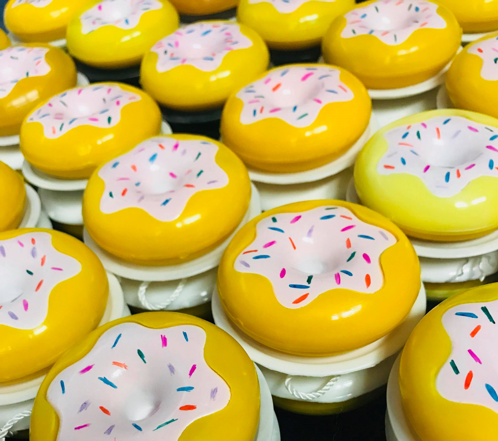
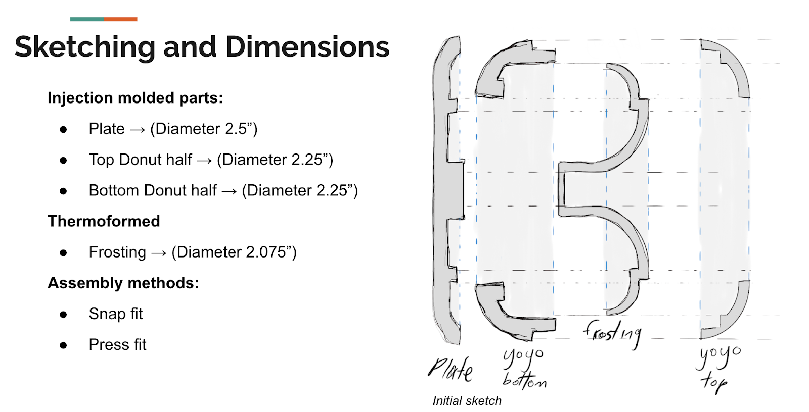
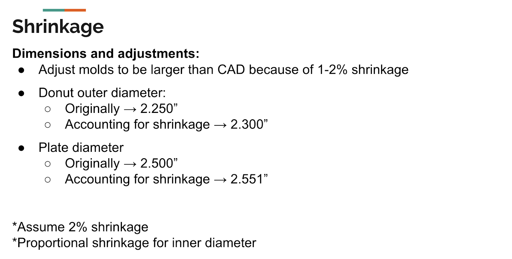
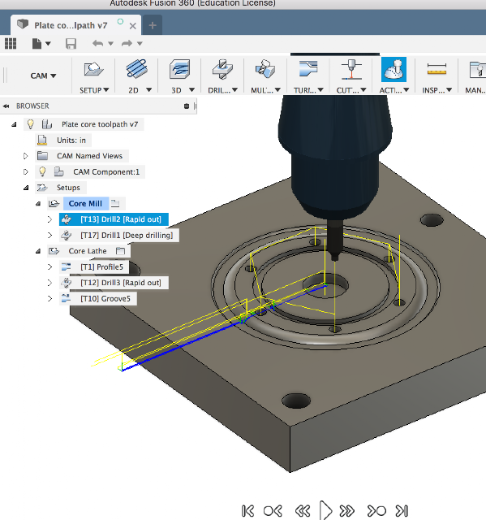

Playful idea → Manufactured product
As part of MIT’s manufacturing coursework, I worked with a six-person team to take a consumer product from concept through design, tooling, manufacturing, assembly, and quality analysis. Our product was the Yonut-—a yo-yo inspired by the form and visual language of a frosted donut.

The "Yonut" - Donut inspired yo-yo
The final product was intentionally playful, and the engineering behind it was rigorous. We designed a multi-component product that could be manufactured at scale using multiple processes, that assembled reliably, and met dimensional requirements across dozens of finished units. We delivered 50 complete yo-yos, consisting of more than 100 individually molded and formed components, while managing of tooling tolerances, process variation, and schedule constraints.


Designing for manufacturing
The Yonut was constructed from four primary components: three injection-molded parts (the donut top, donut bottom, and base plate) and one thermoformed component (the frosting). Early in the project, our focus was on translating the product concept into parts that could actually be manufactured and assembled. This meant thinking beyond CAD geometry and considering factors such as mold design, machining accessibility, press-fit interfaces, material behavior, and thermoforming draw ratios. The donut top proved to be one of our most challenging components due to its geometric complexity. At the same time, the thermoformed frosting introduced a different set of manufacturing constraints. Our initial design experienced excessive draw, requiring us to quickly redesign and reprint the forming tool. Through rapid prototyping and iteration, we developed a revised version that better accommodated the behavior of the material during forming. This demonstrates a well-understood lesson from industry: We design to meet functional requirements AND we design with manufacturing prcoess in mind.
From CAD to tooling
Once the component designs were established, our work shifted from product design into manufacturing engineering. We developed CAM toolpaths and machined the molds required for injection molding. We began with the plate because it was the simplest component, allowing us to validate our manufacturing approach and begin experimenting with injection-molding parameters such as shot size and pressure profiles. From there, we expanded the process to the more complex tooling required for the remaining components. Machining quickly became one of the project’s most significant challenges. CAM development and manufacturing errors required more time than we had initially anticipated, placing the team behind schedule. Rather than treating this as simply a delay, we restructured our production plan and increased our shop workload to recover lost time.

The experience highlighted the importance of realistic manufacturing schedules and building contingency into a project plan. In a production environment, the time required to resolve machining and process issues is often just as important as the nominal cycle time of the operation itself.
Scaling from prototypes to production
With our molds and forming tools completed, we transitioned from making individual prototype parts to manufacturing production quantities. Our team divided responsibilities across manufacturing processes. One group focused on the thermoformed frosting component, while the remaining team members operated the injection-molding process for the donut top and bottom. Because each yo-yo required multiple components, production required careful coordination between manufacturing and assembly. We intentionally began assembly early rather than waiting for every part to be completed. This allowed us to identify potential fit and mating problems before committing to full-scale production. As manufacturing progressed, we continued to adjust process parameters and modify tooling to improve component fit and consistency. By the final production phase, our process was streamlined such that 50% of our total "shipment" was assembled in a single build session.
Measuring quality & variation
Manufacturing the parts was only one part of the project. We also evaluated the consistency and capability of our manufacturing processes. Across the more than 100 parts produced, we selected critical dimensions for each of the four components and performed statistical analysis using subgroup measurements. For each part, we evaluated measures including the process mean, range, control limits, and capability metrics such as Cp and Cpk.
The results highlight which processes were more prone to variation and identify the greatest areas for improvement in our process control. For example, the injection-molded donut bottom demonstrated strong potential capability, while the thermoformed frosting and other components showed greater variation and opportunities for process improvement.
Lessons from the manufacturing floor
The most valuable lessons came from the moments when our original plans did not work. Excessive thermoforming draw required a redesign. CAM and machining difficulties required schedule recovery. Part variation required us to better understand our processes. Assembly began before production was complete so that problems could be discovered early. Through each of these challenges, the project reinforced a principle that has continued to shape my approach to engineering: Design, manufacturing, and quality are not separate stages of product development—they are deeply interconnected decisions that must be considered together.The final Yonut represented more than a completed manufacturing assignment. It was a hands-on experience in taking an idea from CAD to tooling, from tooling to production, and from production to a finished product that could be measured, assembled, and improved.
Project Highlights:
Team: Fire Breathing Rubber Duckies, MIT Manufacturing Course, 2018